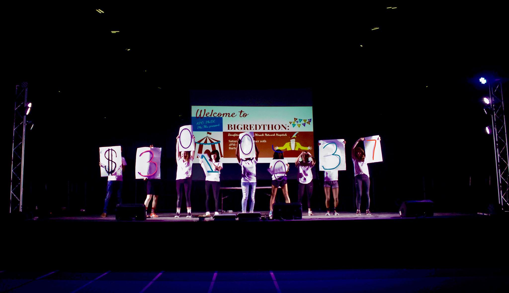

my experience
Technical Product Management Intern
The New York Times, Summer 2020
Software Engineering Intern
The New York Times, Summer 2019
Head of Event Operations
Big Red Thon, 2017-2019

I was a committee member in charge of organizing an annual philanthropic dance marathon that has
raised over $80,000 for Upstate Golisano Children’s Hospital by conducting team meetings,
recruiting sponsors and students, fundraising, creating fun events and games,
planning a timeline for every minute of the entire 10-hour event, and boosting morale.